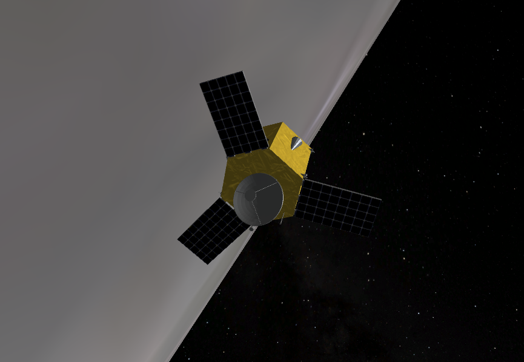

Hello, I'm Luke Serrano
I am a Master's student in Aerospace Engineering at Texas A&M University, advised by Prof. Manoranjan Majji. My research focuses on computer vision for image-driven spacecraft proximity operations, with a current emphasis on monocular pose estimation and neural network-based 2D–3D correspondence learning.
I am currently a Spacecraft GNC Intern at Firefly Aerospace and previously interned at Sandia National Laboratories (DOE L-Clearance) as an NGC Engineer, and at Northrop Grumman in Systems Safety and Reliability Engineering.

Education
M.S., Aerospace Engineering (2025 – Present)
Focus: Computer Vision for Spacecraft Proximity Operations · Advisor: Prof. Manoranjan Majji
B.S., Aerospace Engineering (2022 – 2025)
GPA: 3.8 · Orbit Determination & Estimation · Optimal Control & Estimation · Orbital Mechanics II
Thesis Research
My thesis addresses the problem of image-driven spacecraft proximity operations, focusing on accurate and reliable relative pose estimation between a chaser and target spacecraft using monocular vision.
Neural Network-Based 2D–3D Correspondence Learning for Spacecraft Pose Estimation
The core challenge in the monocular Perspective-n-Point (PnP) pose estimation pipeline is reliably obtaining 2D–3D point correspondences. My thesis investigates training a neural network to solve this correspondence problem directly, feeding the learned correspondences into a solvePnP solver to recover the full 6-DOF relative pose.
To generate training data, I am developing a Blender synthetic image generation pipeline that renders photorealistic images of a target spacecraft from a 3D STL model. Blender naturally provides ground-truth 2D–3D correspondences, which serve as supervision for the network's cost function.
Relative Pose Estimation via Iterative Closest Point (ICP)
Initial pose estimation work used Open3D's Iterative Closest Point algorithm on 3D point clouds (~2,000 points per epoch) to estimate the relative pose of a target spacecraft. While achieving reasonable accuracy, ICP showed limitations at structural connectors where image-space information is richer than the point cloud representation — motivating the transition to monocular methods.
Projects

Lunar Lander Pose Estimation via EKF/MEKF & Gaussian Mixture Filter
Formulated a Multiplicative Extended Kalman Filter (MEKF) and an Extended Gaussian Mixture Filter (EGMF) to estimate the position, velocity, and attitude of a lunar lander in low lunar orbit using optical landmark measurements and gyroscope data. Both filters achieved attitude error within ±0.2° and position error within ±20 m over a 200-second simulation in Basilisk.
Optimal Spacecraft Attitude Control Using Linear Error Quaternion Dynamics
Derived a quaternion-based LQR attitude controller with no linearization assumptions by formulating a multiplicative error quaternion regulation problem with a closed-form torque expression. Validated in Basilisk against pole-placement and MRP PD controllers; the LQR approach achieved lower total cost (J* = 0.000435 vs. 0.002951) and faster detumble with less applied torque.